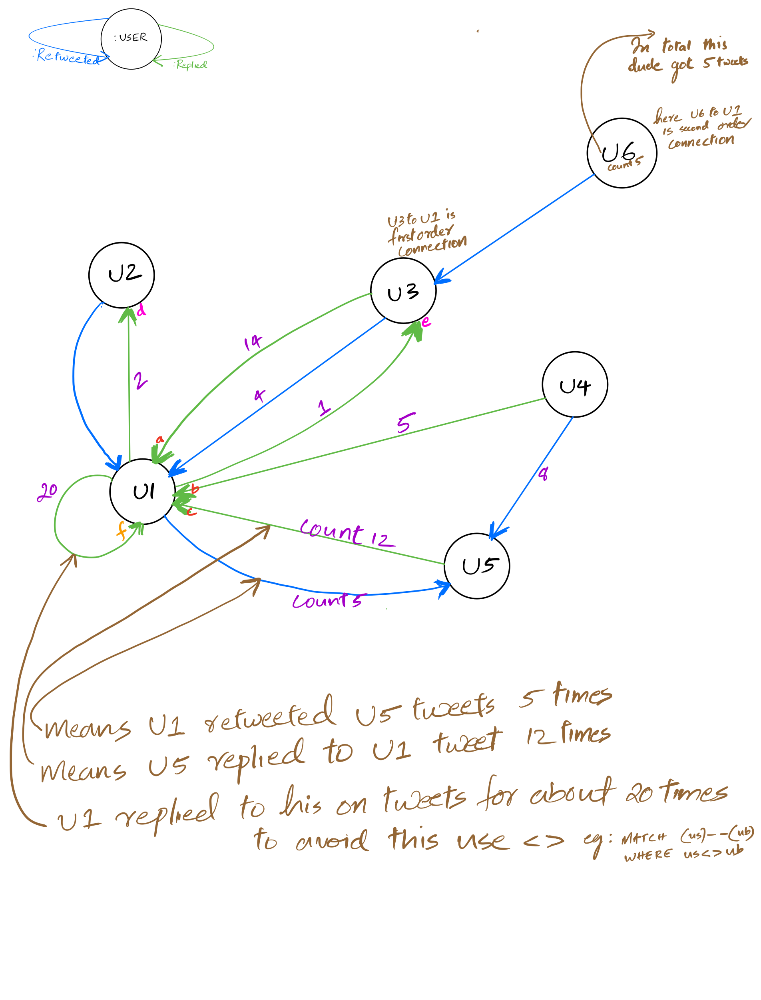

11. Lecture 10: Graph exercise¶
Gittu George, February 3, 2022
11.1. Agenda¶
Hadoop/Spark story
AWS exploration
Graph exercise
Conclusion
11.2. Objectives¶
You will be having an understanding of what Hadoop and spark is
We will explore AWS with whatever knowledge we have now.
Graph exercise
11.3. Hadoop/Spark story¶
11.4. AWS exploration¶
11.5. Graph Exercise¶
11.5.1. Question: Retweet Rate¶
I’m interested to know whether there is a relationship between the rate at which people reply, and are replied to. Upload the data to your database following these instructions.
## Install necessary packages here.
import os
from py2neo import Graph
graph = Graph(uri = '_',
user = '_',
password = '_')
# Your query
replyRate = graph.run("""_____""").data()
import plotly.express as px
px.scatter(replyRate, x='gotreply', y='sentreply')
In any graph questions keep two rules in mind. Can you…
Break the questions into various parts
the rate at which people reply
and are replied to
Can you draw the logic with a pen and paper? (Maybe for a complex scenario or for identifying some interesting questions)
Did you draw ?

Here are some of my thoughts on formulating a CQL query.
What are the elements that I need to RETURN?
gotreply (the rate at which people reply),
sentreply (and are replied to)
Where can I get these elements? (Check CALL apoc.meta.data())
What pattern do I need to give in my MATCH?
I need to be careful with the direction.
Do I need to provide multiple MATCH clauses/patterns?
Maybe multiple MATCH for subquerying
Is any subquery needed?
Maybe YES, one for the first breakdown (gotreply)
and the other for the second breakdown I listed.(sentreply)
Do I have to do any aggregation?
YES, sum(), so what property needs to be inside this?
Okay, I need to do aggregation, but what should be the grouping key ?